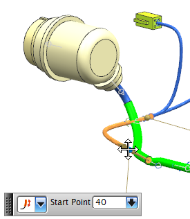
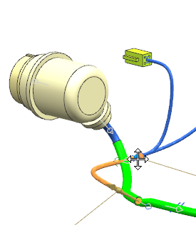

Apply the overstock to the selected segment using the Point to Point method
-
In the Application Method group, from the Method list, select Point to Point.
This time you can select two points on the segment to define the length of the overstock.
The Start Point needs to be nearer the front most branch.

You want the overstock to start a little further away from the branch. So you can drag the Start Point to a better position.
-
Drag the start point further away from the actual beginning of this segment. Stop when you get a value of about 35 or 40.

Tip
You can also type the value directly into the Start Point box or in the on-screen input box and then 回车。
-
Drag the end point to an approximate value of 200.

-
Make sure that the Wrap Type is set to Overlap Spiral and that the Overlap Percentage is set to 50.
-
点击确定。

The overstock on this segment is represented by the green solid.